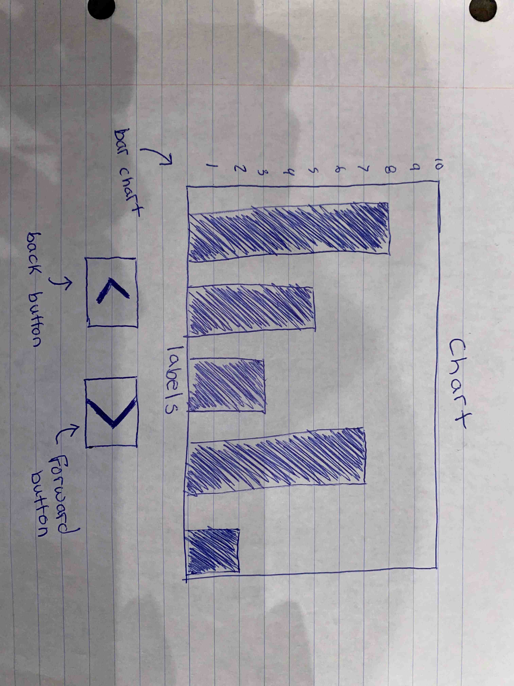

For this project I started off by finding a manageable dataset. This is my first time working with html, javascript, and D3. Finding a simplistic dataset was crucial to my success on this project. Luckily, I found a dataset on crops. The attributes showed the quanitity of what each crop recieved.

After writing up my first draft of code, I spent a lot of time researching on how to make everything work. The lectures did not contain the information I needed and the book was not helpful in the specific questions I had. So, I spent many hours researching how to make this import csv data and select specific columns for each graph. It was less complicated than I initially thought but again, this is my first time coding in this language. I decided to redesign the graph to make it easier to code. There were many videos online about making buttons but not no information on how to code a button that shuffles graphs. Below you can see the second draft of my idea of the interactive visual. I decided to make seperate buttons for each variable this would make the coding process less complicated.
Link to Interactive Visual:
Interactive Visual